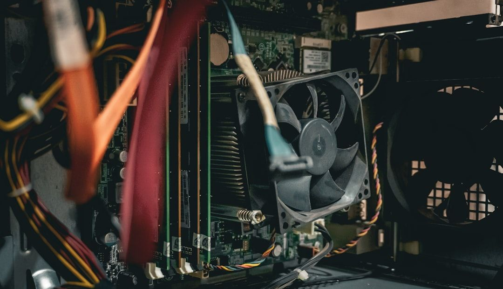
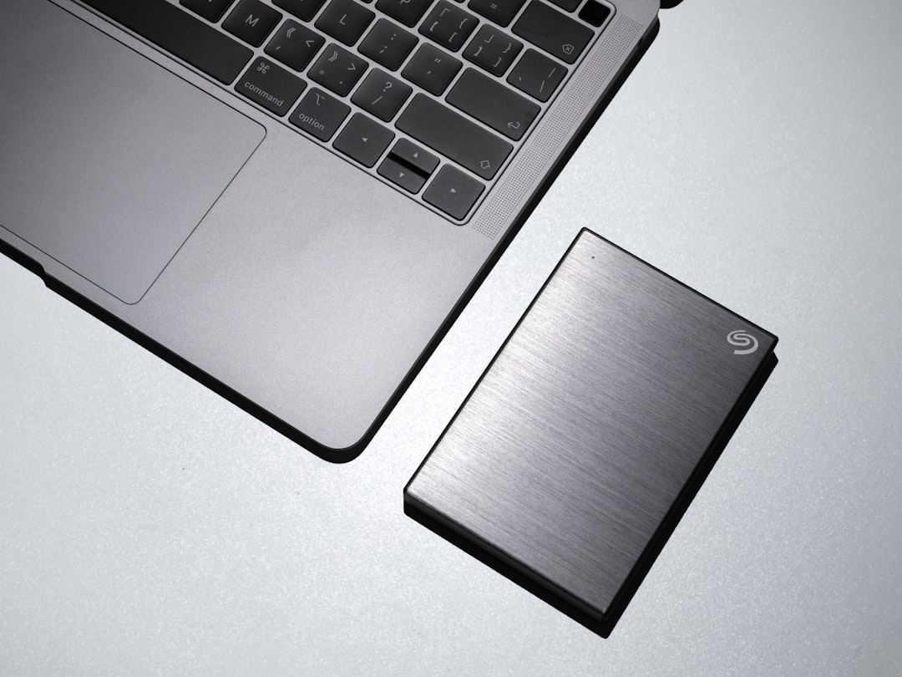
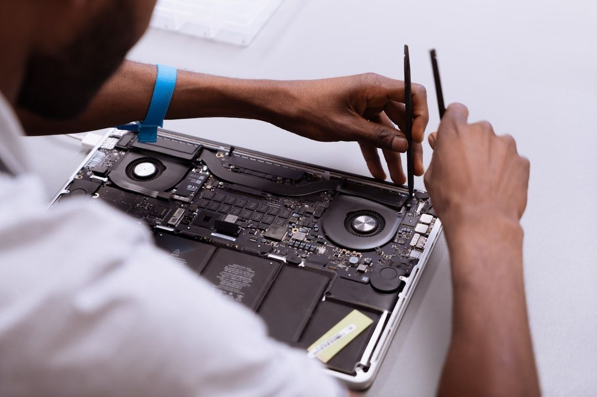
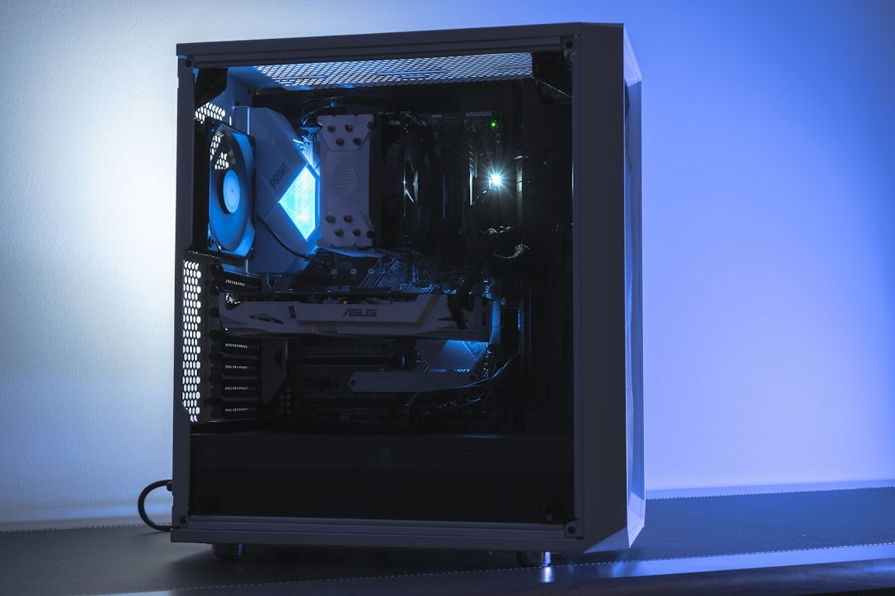
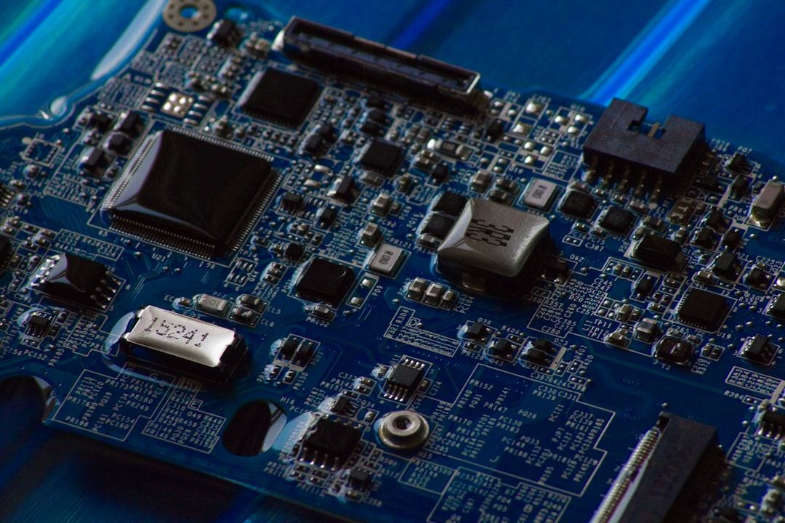
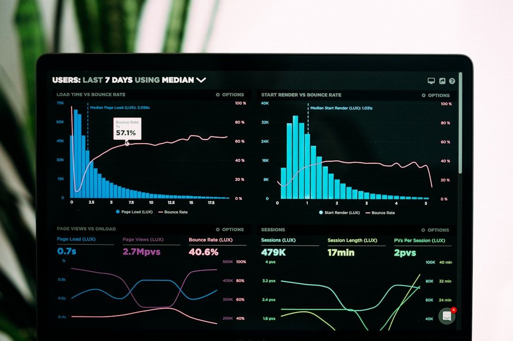
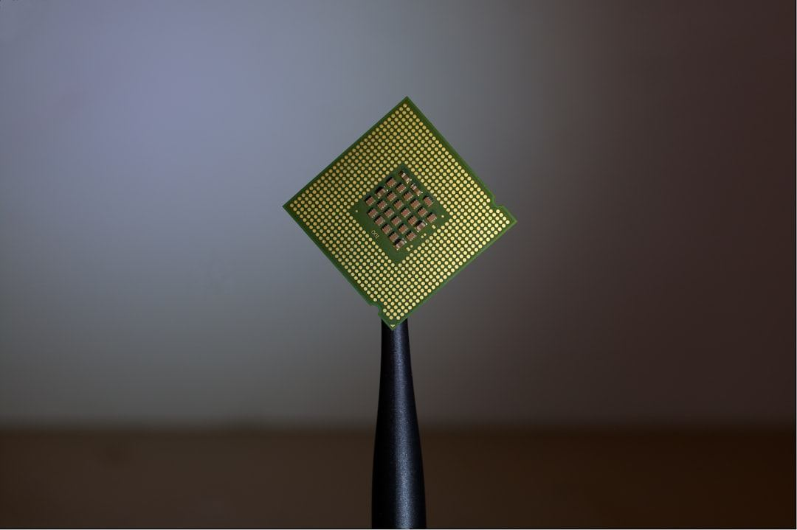
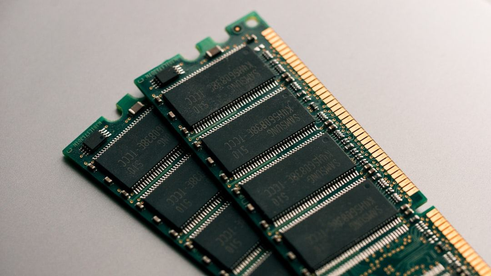
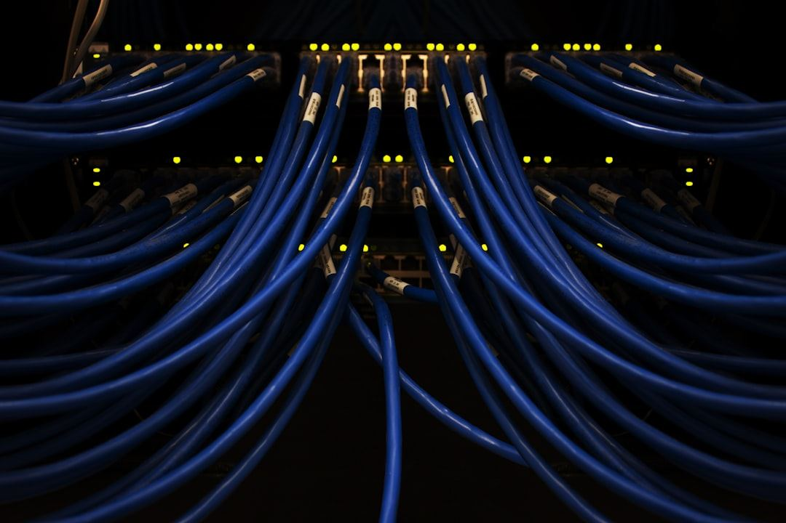
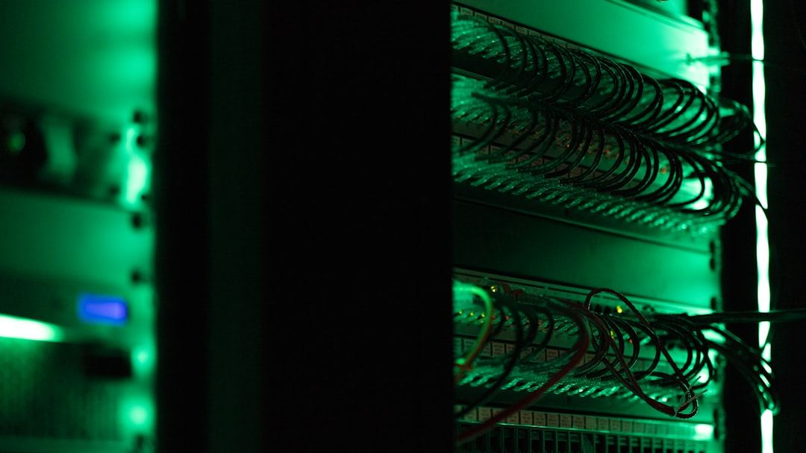

Anticiper les pannes
Maintenance préventive : mises à jour, sauvegardes, nettoyage et audits réguliers pour éviter les interruptions.
SAVOIR PLUS CONSEIL entretient, répare et fait évoluer les équipements de votre organisation grâce à une maintenance préventive, corrective et évolutive assurée par des techniciens certifiés.
Cabinet de conseil et formation agréé par l'État béninois, également centre d'examen habilité ICDL — la référence internationale des compétences numériques.
Démarrer un contrat de maintenanceDiagnostic, intervention et accompagnement : nous prenons en charge le cycle complet de vie de vos équipements et de vos données.
Maintenance préventive : mises à jour, sauvegardes, nettoyage et audits réguliers pour éviter les interruptions.
Maintenance corrective : helpdesk, télémaintenance, dépannage sur site et désinfection après attaque.
Maintenance évolutive : renouvellement, optimisation, performance et conseil pour accompagner votre croissance.
SAVOIR PLUS CONSEIL est un cabinet de conseil et de formation agréé par l'État béninois, et centre d'examen habilité ICDL — la référence internationale des compétences numériques appliquée à la maintenance de votre parc.
Chaque niveau répond à un objectif précis : prévenir les pannes, réparer rapidement et faire évoluer votre système au rythme de votre activité.


Un seul détail à connaître : le nombre de machines concernées. En quelques étapes, générez un contrat de maintenance adapté à votre organisation.
Générer un contrat de maintenanceDe la prise de contact au suivi dans la durée, chaque intervention suit un processus documenté pour garantir un résultat mesurable.
Analyse de l'état du parc, des pannes signalées et des besoins de l'organisation : matériel, logiciels, réseau et sauvegardes.

Sur site ou à distance : réparation, remplacement de composants, mises à jour et nettoyage selon le niveau de maintenance retenu.

Vérification des performances, des sauvegardes et de la sécurité avant remise en service du poste ou du serveur.

Rapport d'intervention, recommandations d'évolution et planification du prochain passage préventif.

Cartes mères, puces, câblage réseau ou salles serveurs : un aperçu du matériel que nos techniciens diagnostiquent et entretiennent au quotidien.




Illustrations libres de droits — matériel présenté à titre indicatif.
Le principal critère est le nombre de machines de votre parc. Générez un aperçu immédiat depuis la page « Contrat », un devis détaillé vous est ensuite transmis par notre équipe.
Les deux : la télémaintenance résout la majorité des incidents logiciels, un technicien se déplace pour tout ce qui touche au matériel (composant, écran, câble).
Nous intervenons à Cotonou et, selon les contrats, dans le reste du Bénin. Contactez-nous pour vérifier la couverture de votre organisation.
Le renouvellement du matériel obsolète, l'optimisation logicielle, l'ajout de RAM ou de SSD, ainsi que des conseils sur l'architecture réseau et la migration vers le cloud.